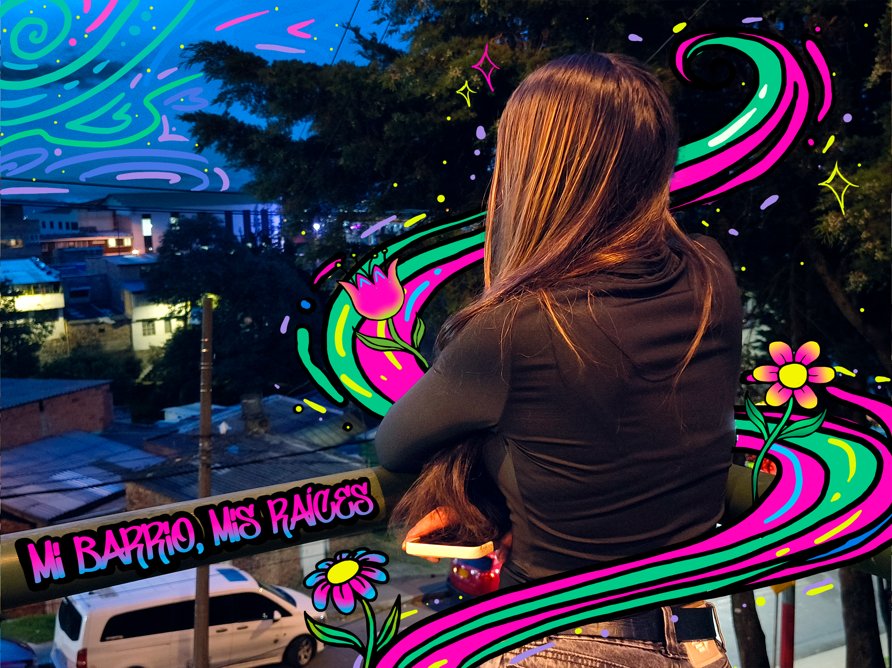

Cerros Orientales · Localidad de Santa Fe · Bogotá D.C.
Historias de barrio: Los Laches
Personas, lugares, oficios chircaleros y tradiciones que construyen nuestra identidad en las faldas de los Cerros Orientales de Bogotá.
Fotografía ilustrada · Barrio Los Laches
Sobre el proyecto
La cultura también se vive en lo cotidiano
Una plataforma comunitaria para descubrir, conservar y compartir las historias, personas, oficios, lugares y tradiciones que dan vida al Barrio Los Laches en la Localidad de Santa Fe.
Nacido del esfuerzo de familias chircaleras junto al histórico Santuario de Nuestra Señora de la Peña (1685), nuestro territorio guarda en cada escalera y mirador la memoria viva de los Cerros Orientales de Bogotá.
- Santuario La Peña
- 1685
- Primeros convites
- 1954
- Mirador Los Laches
- 2.750 m


Voces del barrio
Las sabedoras y el sabor de siempre en Los Laches
Doña Mercedes y las Sabedoras del Maíz
Una vida entre fogones de leña, envueltos de mazorca, ajiaco, chicha y olla comunitaria en los cerros santafereños.
“Con una olla comunitaria, envueltos de maíz y chicha tradicional levantamos los convites de toda nuestra cuadra.”
Construcción colectiva
Suma tu recuerdo a la memoria de Los Laches
¿Tienes una fotografía familiar en los antiguos chircales, conoces un oficio tradicional o quieres postular a un vecino ejemplar de la Localidad de Santa Fe?
Tu aporte llega al comité de memoria barrial.